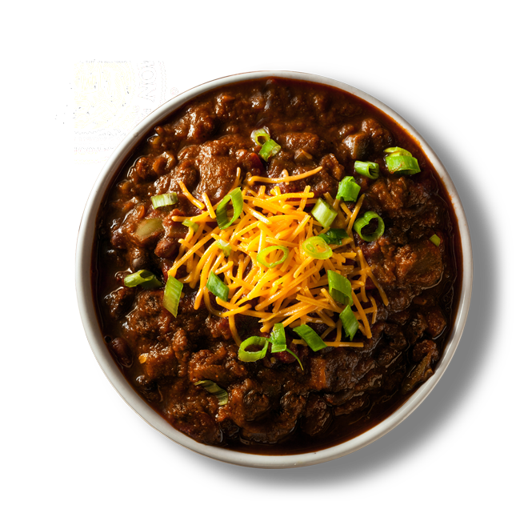

Jimmyboy's Famous Chili

Chili Done right, and killer dish that will warm the heart on a cold winter day.
Jims Famous chili is world renowned with special herbs and spices.
Slow cooked, add your favorite toppings such as cheese, scallions, onions sour cream, the options are endless
Ingredients
- Beef chuck
- Tomato paste
- Chili powder
- Onion
- ground beef
- Kidney beans
Steps
- Add Tomato paste
- Sear Meat with Onions
- Add kidney beans
- Add chili powder
- Let sit for 2 to 6 hours
- Serve hot with your choice of toppings